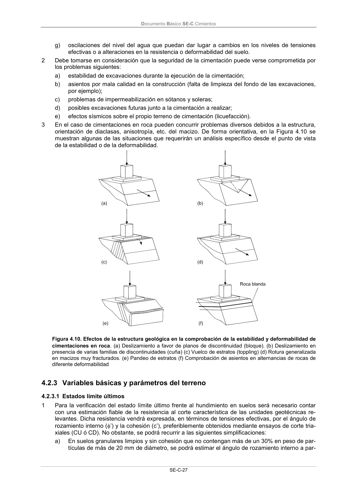

DB-SE-C · 4.2.3 Variables básicas y parámetros del terreno · 4.2.3.1 Estados límite últimos · versión 2019-12-20
SHA256: a71133f4b0dca253e45ea3071c70f2a512354bcc5cd841bf89b1a502f567ac5e · página física 32 de 165 · métodos de encabezado
solo si están cotejados.
Formatos: Markdown · JSON de bloques · PDF p. 32 · imagen PNG
Documento Básico SE-C Cimientos SE-C-27 g) oscilaciones del nivel del agua que puedan dar lugar a cambios en los niveles de tensiones efectivas o a alteraciones en la resistencia o deformabilidad del suelo. 2 Debe tomarse en consideración que la seguridad de la cimentación puede verse comprometida por los problemas siguientes: a) estabilidad de excavaciones durante la ejecución de la cimentación; b) asientos por mala calidad en la construcción (falta de limpieza del fondo de las excavaciones, por ejemplo); c) problemas de impermeabilización en sótanos y soleras; d) posibles excavaciones futuras junto a la cimentación a realizar; e) efectos sísmicos sobre el propio terreno de cimentación (licuefacción). 3 En el caso de cimentaciones en roca pueden concurrir problemas diversos debidos a la estructura, orientación de diaclasas, anisotropía, etc. del macizo. De forma orientativa, en la Figura 4.10 se muestran algunas de las situaciones que requerirán un análisis específico desde el punto de vista de la estabilidad o de la deformabilidad. Figura 4.10. Efectos de la estructura geológica en la comprobación de la estabilidad y deformabilidad de cimentaciones en roca. (a) Deslizamiento a favor de planos de discontinuidad (bloque). (b) Deslizamiento en presencia de varias familias de discontinuidades (cuña) (c) Vuelco de estratos (toppling) (d) Rotura generalizada en macizos muy fracturados. (e) Pandeo de estratos (f) Comprobación de asientos en alternancias de rocas de diferente deformabilidad 4.2.3 Variables básicas y parámetros del terreno 4.2.3.1 Estados límite últimos 1 Para la verificación del estado límite último frente al hundimiento en suelos será necesario contar con una estimación fiable de la resistencia al corte característica de las unidades geotécnicas re- levantes. Dicha resistencia vendrá expresada, en términos de tensiones efectivas, por el ángulo de rozamiento interno (’) y la cohesión (c’), preferiblemente obtenidos mediante ensayos de corte tria- xiales (CU ó CD). No obstante, se podrá recurrir a las siguientes simplificaciones: a) En suelos granulares limpios y sin cohesión que no contengan más de un 30% en peso de par- tículas de más de 20 mm de diámetro, se podrá estimar el ángulo de rozamiento interno a par-
